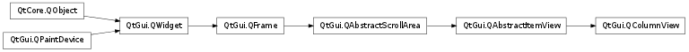

QColumnView ¶

Synopsis ¶
Functions ¶
- def columnWidths ()
- def initializeColumn (column)
- def previewWidget ()
- def resizeGripsVisible ()
- def setColumnWidths (list)
- def setPreviewWidget (widget)
- def setResizeGripsVisible (visible)
Virtual functions ¶
- def createColumn (rootIndex)
Signals ¶
- def updatePreviewWidget (index)
Detailed Description ¶
The PySide.QtGui.QColumnView class provides a model/view implementation of a column view.
PySide.QtGui.QColumnView displays a model in a number of QListViews, one for each hierarchy in the tree. This is sometimes referred to as a cascading list.
The PySide.QtGui.QColumnView class is one of the Model/View Classes and is part of Qt’s model/view framework .
PySide.QtGui.QColumnView implements the interfaces defined by the PySide.QtGui.QAbstractItemView class to allow it to display data provided by models derived from the PySide.QtCore.QAbstractItemModel class.

See also
Model/View Programming
- class PySide.QtGui. QColumnView ( [ parent=None ] ) ¶
-
Parameters: parent – PySide.QtGui.QWidget Constructs a column view with a parent to represent a model’s data. Use PySide.QtGui.QColumnView.setModel() to set the model.
See also
- PySide.QtGui.QColumnView. columnWidths ( ) ¶
-
Return type: Returns a list of the width of all the columns in this view.
- PySide.QtGui.QColumnView. createColumn ( rootIndex ) ¶
-
Parameters: rootIndex – PySide.QtCore.QModelIndex Return type: PySide.QtGui.QAbstractItemView To use a custom widget for the final column when you select an item overload this function and return a widget. index is the root index that will be assigned to the view.
Return the new view. PySide.QtGui.QColumnView will automatically take ownership of the widget.
- PySide.QtGui.QColumnView. initializeColumn ( column ) ¶
-
Parameters: column – PySide.QtGui.QAbstractItemView Copies the behavior and options of the column view and applies them to the column such as the PySide.QtGui.QAbstractItemView.iconSize() , PySide.QtGui.QAbstractItemView.textElideMode() and PySide.QtGui.QAbstractItemView.alternatingRowColors() . This can be useful when reimplementing PySide.QtGui.QColumnView.createColumn() .
- PySide.QtGui.QColumnView. previewWidget ( ) ¶
-
Return type: PySide.QtGui.QWidget Returns the preview widget, or 0 if there is none.
- PySide.QtGui.QColumnView. resizeGripsVisible ( ) ¶
-
Return type: PySide.QtCore.bool This property holds the way to specify if the list views gets resize grips or not.
By default, visible is set to true
See also
PySide.QtGui.QColumnView.setRootIndex()
- PySide.QtGui.QColumnView. setColumnWidths ( list ) ¶
-
Parameters: list –
- PySide.QtGui.QColumnView. setPreviewWidget ( widget ) ¶
-
Parameters: widget – PySide.QtGui.QWidget Sets the preview widget .
The widget becomes a child of the column view, and will be destroyed when the column area is deleted or when a new widget is set.
- PySide.QtGui.QColumnView. setResizeGripsVisible ( visible ) ¶
-
Parameters: visible – PySide.QtCore.bool This property holds the way to specify if the list views gets resize grips or not.
By default, visible is set to true
See also
PySide.QtGui.QColumnView.setRootIndex()
- PySide.QtGui.QColumnView. updatePreviewWidget ( index ) ¶
-
Parameters: index – PySide.QtCore.QModelIndex